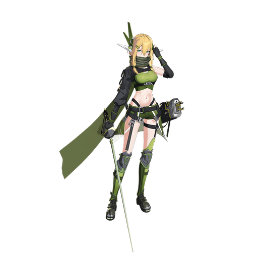

基本データ
- コスト
- 3.0
- 体力
- 未入力
- 赤ロック
- 37
- 動画
- 登録動画

Move Table
| 射撃 | 名称 | 弾数 | 威力 | 備考 |
|---|---|---|---|---|
| メイン射撃 | クロスボウ | 15 | 83~449 | クロスボウから矢を9連射 |
| サブ射撃 | バレルランチャー | 1(4凸時2) | 315(510) | 溜め撃ち可能。特定武装からキャンセルで性質変化 |
| 横・後サブ射撃 | アローキャスティング・連射 | 1 | 156~375 | 入力方向に移動しながらスタン矢を3連射 |
| Nサブ格闘 | クロスボウ・散射 | 2 | 80~337 | アップデートで追加。高誘導弾を一斉発射 |
| 横サブ格闘 | 195 | - | 扇状に5本のスタン矢を発射 | |
| 後サブ格闘 | クロスボウ・クラスターアロー | 1 | 120~307 | 1凸で解禁。敵の頭上から矢の雨を降らせる |
| 格闘 | 名称 | 入力 | 威力 | 備考 |
| メイン格闘 | エルフの剣術 | NNN | 526 | 剣で斬りつけてから矢で追撃 |
| サブ射派生 踏み撃ち | N→サブ射 | 639～729 | - | 5凸で解禁。サブ長押しで威力増加 |
| NN→サブ射 | 708(776) | - | - | |
| 横格闘 | エルフの剣術 | 横N | 499 | 横斬りの後回し蹴りから矢で追撃 |
| サブ射派生 踏み撃ち | 横→サブ射 | 681(749) | - | N格と同様 |
| バーストアタック | 名称 | - | 威力 | |
| SB/FMDC | 備考 | - | - | |
| バーストアタック | 優雅にして華麗に | 925/840 | - | 細かく移動しながらの6連射、1発毎に誘導がかかり直す |